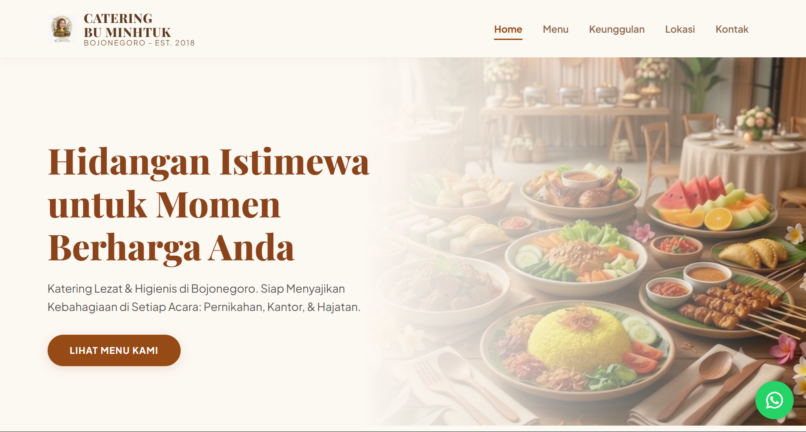
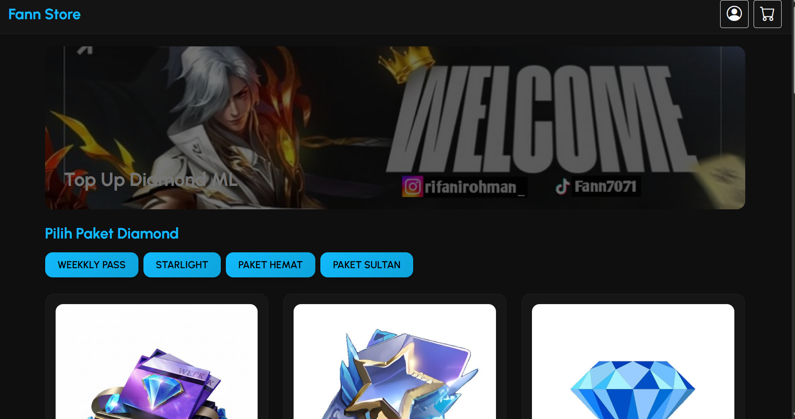
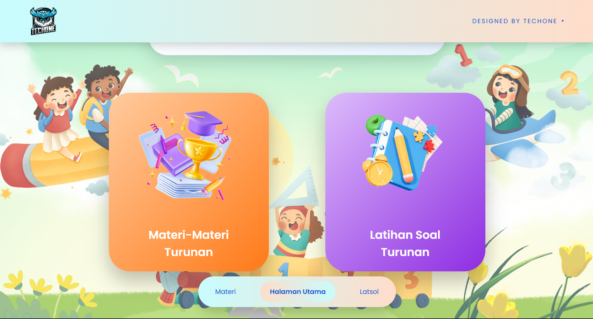
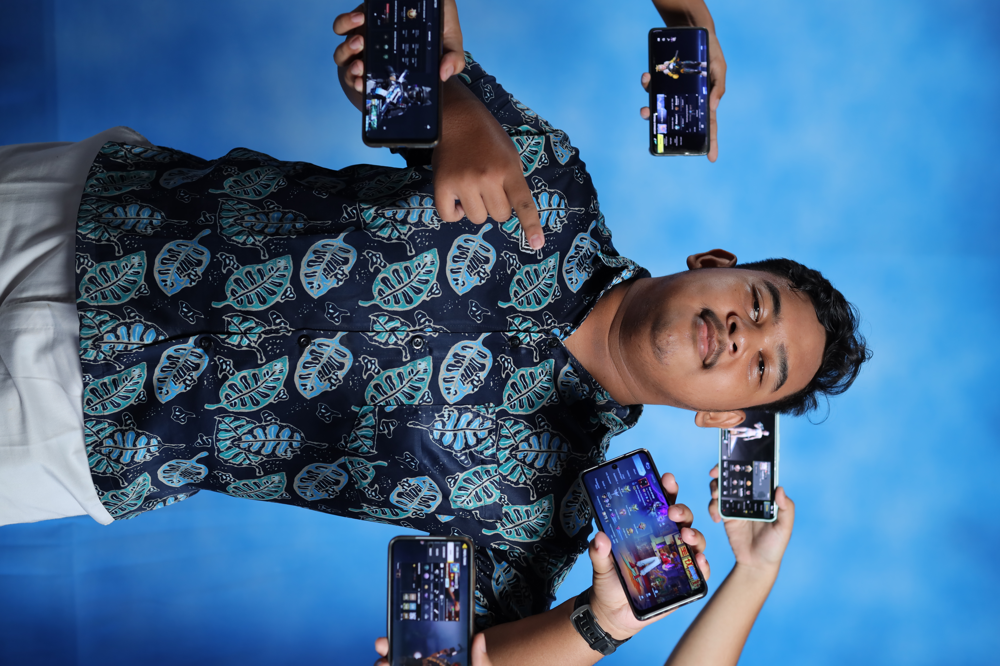

Halo, salam kenal Aku Ifann!
Seorang mahasiswa yang sangat tertarik pada teknologi dan pemrograman. Saya memiliki ketertarikan yang tinggi dengan dunia IT, dan selalu ingin belajar Tentang hal-hal baru.

Sistem pemesanan catering online untuk memudahkan pengelolaan menu makanan dan transaksi pelanggan secara digital.

Platform e-commerce sederhana dengan fitur etalase produk, detail barang, pengelolaan keranjang belanja, dan pengelolaan sistem admin dan karyawan yang berbeda.

Web interaktif untuk latihan kuis, soal ujian, dan video materi pembahasan guna membantu siswa untuk mengevaluasi kemampuan pemahaman materi.

Tumbuh dengan ketertarikan mendalam pada teknologi dan komputer, saya mulai mengeksplorasi dunia pemrograman dan pembuatan website secara otodidak maupun melalui proyek-proyek pembelajaran. Saya menikmati proses memecahkan masalah (problem solving) di setiap baris kode yang saya buat. Tujuan utama saya adalah terus mengembangkan kemampuan di bidang teknologi informasi untuk menciptakan solusi digital yang bermanfaat.
Nama: Mochammad Rifani Rohman
Tempat, Tgl Lahir: Bojonegoro, 06 Desember 2007
Fokus: Pengembangan Website & Eksplorasi AI
Mendalami dasar-dasar ilmu komputer, pengembangan perangkat lunak, serta implementasi teknologi informasi dalam berbagai bidang.
Membangun kedisiplinan, karakter kepemimpinan, sekaligus menumbuhkan minat awal pada eksplorasi ilmu komputer.
Memiliki kesamaan minat di bidang teknologi, atau ada peluang project website yang bisa dikerjakan bersama? Jangan ragu untuk menyapa saya!